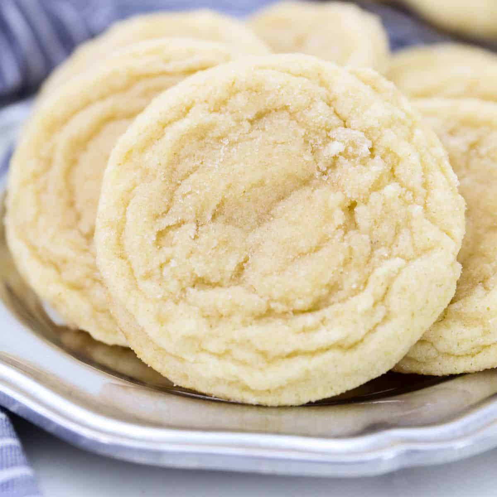

Sugar Cookie Recipe!

Ingredients List:
- Flour
- Leaveners
- Butter
- Sugar
- Egg
Recipe:
- Preheat the oven to 375 degrees - Temperature will be done in Farenheight for this recipe.
- Mix all dry ingredients in a bowl.
- Mix all wet ingredients in a different bowl - Make sure to mix dry and wet seperately!
- Slowly pour the flour mixture into the butter mixture.
- Roll the dough into balls.
- Place dough balls onto the baking sheet.
- Bake cookies until golden brown on the edges.
Original Recipe
Contact Me
My Website
Ethan Kaull
775 Wyoming St. Apt. 211D
Missoula, MT
59801